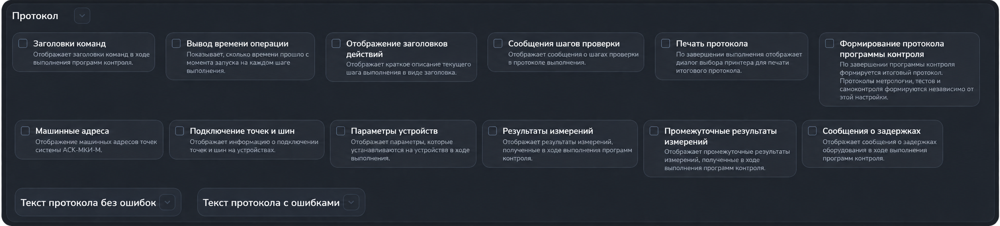

Раздел «Протокол»
Раздел настраивает состав сообщений в протоколе выполнения, печать и текст итогового протокола. Откройте Настройки → Параметры → Протокол.

Сообщения в ходе выполнения
- Заголовки команд — отображает заголовки выполняемых команд программы контроля. Они также позволяют группировать сообщения в блоки команд.
- Вывод времени операции — добавляет к сообщениям время, прошедшее с начала выполнения. Время отображается в формате минут, секунд и миллисекунд.
- Отображение заголовков действий — показывает краткое описание текущего действия.
- Сообщения шагов проверки — показывает сообщения об отдельных шагах проверки.
- Машинные адреса — показывает машинные адреса точек системы АСК-МКИ-М.
- Подключение точек и шин — показывает информацию о коммутации точек и шин на устройствах.
- Параметры устройств — показывает параметры, устанавливаемые на оборудовании в ходе выполнения.
- Результаты измерений — показывает результаты выполненных измерений.
- Промежуточные результаты измерений — добавляет промежуточные значения измерений.
- Сообщения о задержках — показывает сообщения об ожиданиях оборудования. Длительность ожиданий задаётся отдельно в разделе «Задержки оборудования». Отключение сообщений не отменяет сами задержки.
Итоговый протокол и печать
- Печать протокола — после завершения выполнения предлагает выбрать принтер для печати итогового протокола.
- Формирование протокола программы контроля — включает подготовку итогового протокола программы контроля. Протоколы метрологии, тестов и самоконтроля формируются независимо от этого переключателя.
При включённой печати или формировании протокола после выполнения программы контроля запрашиваются данные для итогового документа. Шрифт и размер печатных форм настраиваются в разделе «Интерфейс».
Тексты протоколов
Раскройте стрелкой «Текст протокола без ошибок» или «Текст протокола с ошибками» и отредактируйте соответствующий шаблон. Программа выбирает шаблон по наличию ошибок в результатах проверки.
Служебные строки с датой, обозначением и номером изделия, а также названием программы защищены от редактирования. Обозначения с символом $ служат для подстановки данных протокола; сохраняйте их в тексте, если эти данные должны попасть в документ.
Кнопка со значком сброса рядом с заголовком возвращает стандартный текст выбранного шаблона. Чтобы сохранить восстановленный шаблон, подтвердите изменение раздела.
Сохранение изменений
После изменения параметров появляются значки галочки и крестика. Нажмите галочку, чтобы сохранить настройки и шаблоны, или крестик, чтобы вернуть последние сохранённые значения.